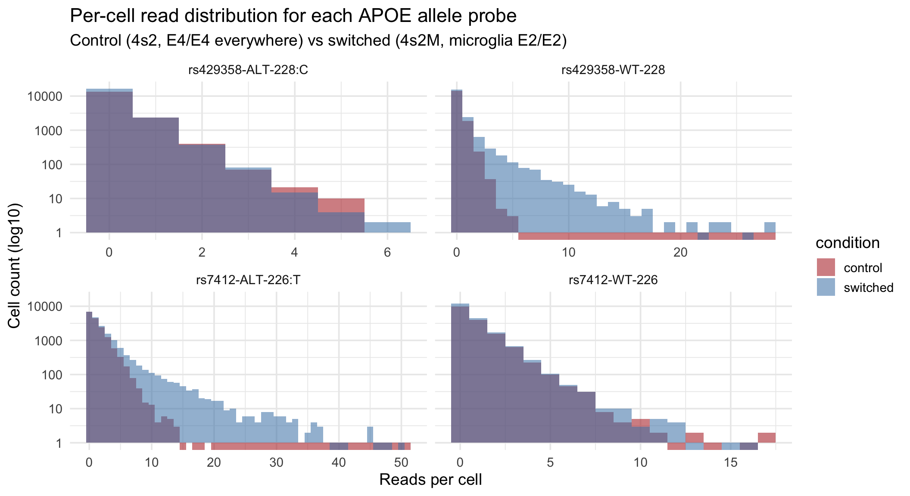
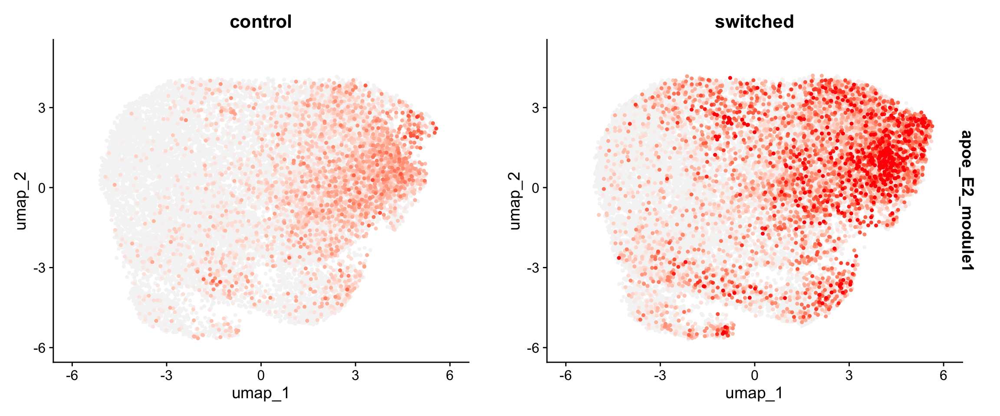
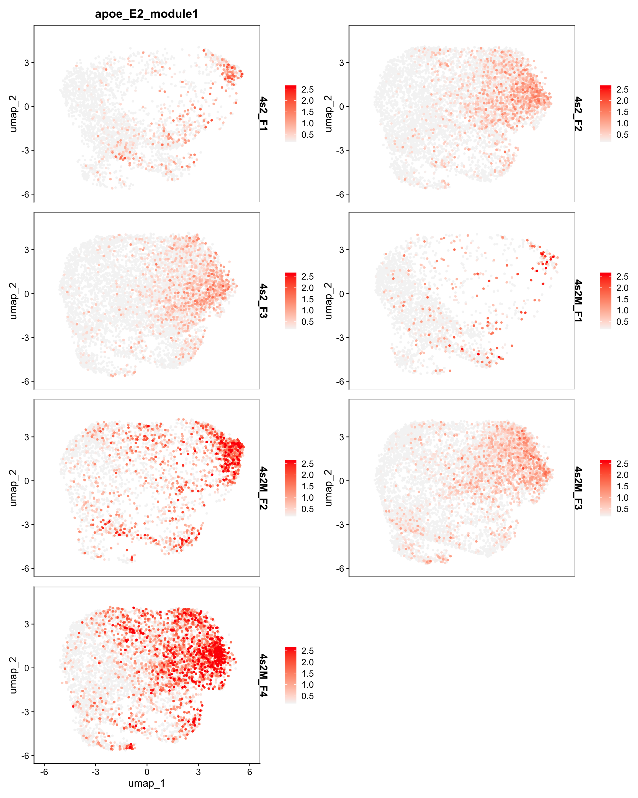
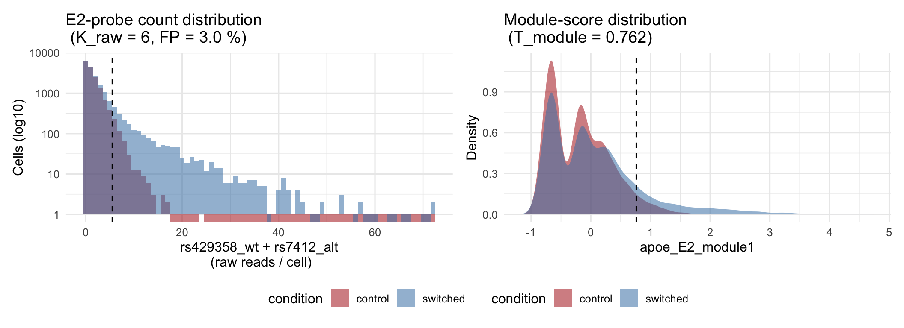
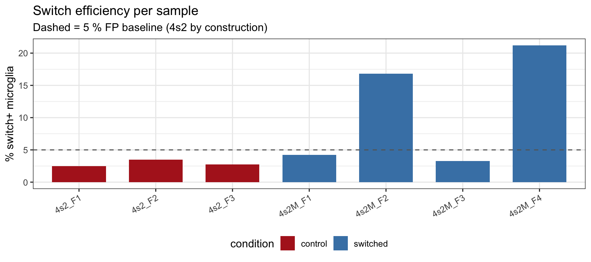
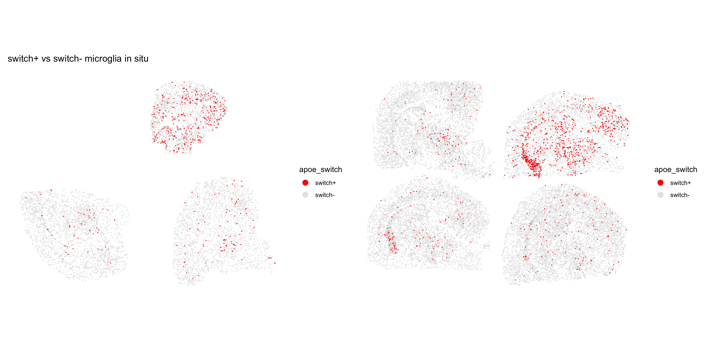
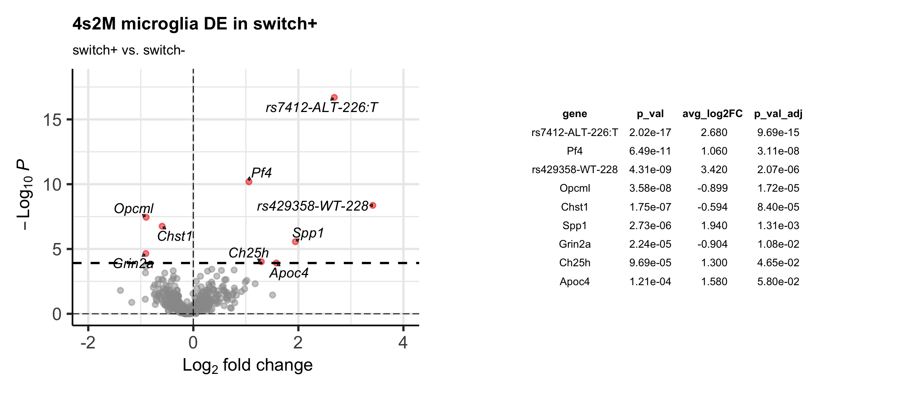
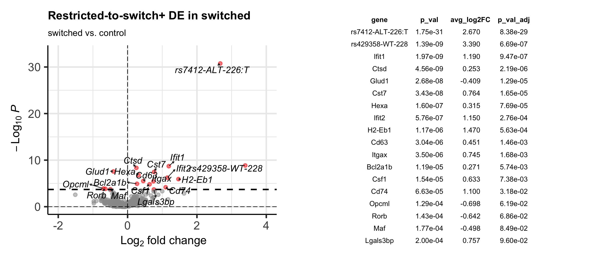

The mBrain_480g Xenium panel carries four rs-prefixed probes covering the two SNPs that define the human APOE alleles.
All cells express APOE4/APOE4 in the genomic background.
In the 4s2M microglia tamoxifen induces microglia-restricted Cre activation and switches APOE E4/E4 to E2/E2.
The whole pipeline assumes a clean microglia object. Every result here is computed on the cells inside data/20260517_microglia_subcluster.qs2. If non-microglial cells (cluster/s contamination), they “dilute” the 4s2M switch+ fraction (the Cre-driven cassette is microglia-restricted).
APOE allele probes.
Probe
Variant at SNP
Present in alleles
Expected in 4s2 (all E4)
Expected in 4s2M microglia (E2)
rs429358-WT-228
T at rs429358
E2, E3
0
high (only allele carrying T at rs429358 after switch)
# Pull per-cell raw counts of the four probes (both SNPs carry a WT and an ALT variant); reused by# the histogram chunk below, the summary table that follows, and the ROC fit further down.probes <-c("rs429358-WT-228", "rs429358-ALT-228:C", "rs7412-WT-226", "rs7412-ALT-226:T")stopifnot(all(probes %in%rownames(mg[["Xenium"]])))mm <-as.matrix(GetAssayData(mg, assay ="Xenium", layer ="counts")[probes, ])# Attach per-cell probe counts to the Seurat object so the ROC fit and the spatial / DE chunks below# can pull them straight from mg@meta.data without re-extracting the count matrix.mg$rs429358_wt <-as.integer(mm["rs429358-WT-228", ])mg$rs429358_alt <-as.integer(mm["rs429358-ALT-228:C", ])mg$rs7412_wt <-as.integer(mm["rs7412-WT-226", ])mg$rs7412_alt <-as.integer(mm["rs7412-ALT-226:T", ])
Reads per cell per probe
Code
# Long-format count table aligned to per-cell condition; t(mm) puts cells in rows and probes in cols# so the bound condition vector and the pivot stay straight.probe_long <-as_tibble(t(mm)) |>mutate(condition = mg$condition) |>pivot_longer(-condition, names_to ="probe", values_to ="count")# Log10 y-axis so the 0-read bin stays visible without flattening the small positive tail; bin width 1# matches the integer count grid. Facet x-scales are free because the four probes have different tails.probe_long |>ggplot(aes(x = count, fill = condition)) +geom_histogram(binwidth =1, position ="identity", alpha =0.55) +scale_y_log10() +scale_fill_manual(values =c(control ="firebrick", switched ="steelblue")) +facet_wrap(~ probe, scales ="free_x") +labs(x ="Reads per cell", y ="Cell count (log10)",title ="Per-cell read distribution for each APOE allele probe",subtitle ="Control (4s2, E4/E4 everywhere) vs switched (4s2M, microglia E2/E2)") +theme_minimal(base_size =14)

Proportion (ratio) of reads for each probe
Code
# Per-probe summary: how many cells have >= 1 read, mean count per condition.# The expected_ctrl column records what we should see under the E4/E4 background.tibble(probe = probes,#snp = c("T at rs429358 (E2/E3)", "C at rs429358 (E4)",# "C at rs7412 (E3/E4)", "T at rs7412 (E2)"),expected_in_4s2 =c("0", "high (E4 everywhere)","high (E4 everywhere)", "0"),# n_cells_ge1 = rowSums(mm >= 1),# n_cells_ge2 = rowSums(mm >= 2),# n_cells_ge3 = rowSums(mm >= 3),mean_ctrl =round(rowMeans(mm[, mg$condition =="control"]), 3),mean_sw =round(rowMeans(mm[, mg$condition =="switched"]), 3),ratio_sw_ctrl =round(rowMeans(mm[, mg$condition =="switched"]) /pmax(rowMeans(mm[, mg$condition =="control"]), 1e-3), 2)) |>kbl(caption ="Per-probe counts (35,700 cells, microglia subset object).") |>kable_styling("striped", full_width =FALSE)
probe: probe ID exactly as named on the mBrain_480g panel.
expected_in_4s2: prediction under the E4/E4 background, where every cell in the 4s2 control arm is homozygous E4. 0 means the probe should fire in no cell; high means it should fire in every cell.
mean_ctrl: mean per-cell count of the probe in the 4s2 control arm.
mean_switch: mean per-cell count of the probe in the 4s2M switched arm.
ratio: mean_switch / mean_ctrl. Values above 1 mean the probe rises in the switched arm, values below 1 mean it falls.
APOE E2 module score on the microglia UMAP
The Seurat AddModuleScore() averages the per-cell expression of the two E2-evidence probes (rs429358-WT-228 + rs7412-ALT-226:T)
Code
# from the same expression bin; the 480-gene panel gives plenty of background controls. We score on# the per-sample-refit SpaNorm assay (single consolidated data layer) rather than the Xenium counts# assay (per-sample split layers, which AddModuleScore cannot iterate over in Seurat v5).# nbin = 10 and ctrl = 30 are tuned for the 480-gene panel; the Seurat defaults (nbin = 24, ctrl = 100)# overfill each expression bin and trigger a sample-without-replacement error on a panel this small.mg <-AddModuleScore(mg,features =list(c("rs429358-WT-228", "rs7412-ALT-226:T")),name ="apoe_E2_module",assay ="SpaNorm",nbin =10,ctrl =30)# AddModuleScore appends a numeric suffix; the metadata column lands as "apoe_E2_module1".# Split the FeaturePlot by condition so the within-control noise floor and the within-switched# shift are visible side-by-side. q20 / q95 clipping keeps the colour scale legible against outliers.FeaturePlot(mg,features ="apoe_E2_module1",pt.size=0.8,reduction ="umap",split.by ="condition",cols =c("grey96", "red"),order =TRUE,min.cutoff ="q20",max.cutoff ="q98")

Code
# FeaturePlot ignores `ncol` when `split.by` is set (it only honours ncol with multiple features).# Use combine = FALSE to get a list of one panel per sample, then patchwork::wrap_plots(ncol = 2)# to lay them out on a 2-column grid.FeaturePlot(mg,features ="apoe_E2_module1",pt.size =0.8,cols =c("grey96", "red"),reduction ="umap",split.by ="sample_id",order =TRUE,min.cutoff ="q20",max.cutoff ="q98",combine =FALSE) |> patchwork::wrap_plots(ncol =2)

Per-cell switch call
The two E2-evidence probes (rs429358-WT-228 and rs7412-ALT-226:T) are combined to create a binary switch+ / switch- call per microglia (K_raw).
The threshold is calibrated on the 4s2 (E4/E4) arm, where every read on either E2 probe shoud be “background noise”. We pick the smallest integer cutoff that keeps the 4s2 false-positive (FP) rate at or below 5 %.
Calibrate the threshold against the 4s2 background
Code
# Per-cell sum of the two T-allele probes; integer-grounded and matches the boss's "express E2" framing.mg$e2_sum <- mg$rs429358_wt + mg$rs7412_alt# Empirical FP rate of "e2_sum >= K" on the 4s2 (E4/E4) microglia; pick the smallest K with FP <= 5 %.e2_sum_ctrl <- mg$e2_sum[mg$condition =="control"]fp_table <-tibble(K =1:max(mg$e2_sum)) |>mutate(fp_rate =map_dbl(K, \(k) mean(e2_sum_ctrl >= k)))K_raw <-min(fp_table$K[fp_table$fp_rate <=0.05])stopifnot("4s2 background never falls below 5 % at any positive K; lower the FP target."=is.finite(K_raw))# Parallel calibration on the continuous AddModuleScore output, for cross-checking only.T_module <-quantile(mg$apoe_E2_module1[mg$condition =="control"], 0.95, na.rm =TRUE)# Left panel: count histogram of e2_sum, log y so the zero bin and the tail are both visible.p_count <- mg@meta.data |>as_tibble() |>ggplot(aes(e2_sum, fill = condition)) +geom_histogram(binwidth =1, position ="identity", alpha =0.55) +scale_y_log10() +geom_vline(xintercept = K_raw -0.5, linetype ="dashed", colour ="black") +scale_fill_manual(values =c(control ="firebrick", switched ="steelblue")) +labs(x ="rs429358_wt + rs7412_alt\n (raw reads / cell)",y ="Cells (log10)",title =sprintf("E2-probe count distribution\n (K_raw = %d, FP = %.1f %%)", K_raw, 100* fp_table$fp_rate[fp_table$K == K_raw])) +theme_minimal(base_size =12)# Right panel: density of the continuous module score with the 95th-percentile cutoff.p_mod <- mg@meta.data |>as_tibble() |>ggplot(aes(apoe_E2_module1, fill = condition)) +geom_density(alpha =0.55, colour =NA) +geom_vline(xintercept = T_module, linetype ="dashed", colour ="black") +scale_fill_manual(values =c(control ="firebrick", switched ="steelblue")) +labs(x ="apoe_E2_module1", y ="Density",title =sprintf("Module-score distribution\n (T_module = %.3f)", T_module)) +theme_minimal(base_size =12)p_count + p_mod +plot_layout(guides ="collect") &theme(legend.position ="bottom")

K_raw (in this render, K_raw = 6) is the minimum number of E2-probe reads a microglia must carry to be called switch+. We sum the per-cell counts of rs429358-WT-228 and rs7412-ALT-226:T, tally how often 4s2 microglia reach 1, 2, 3, … reads by chance alone, and pick the smallest cutoff that keeps no more than 5 % of 4s2 microglia at or above it. In our data 3.0 % of 4s2 microglia carry six or more E2 reads by chance, so any 4s2M microglia with six or more reads sits comfortably above the noise floor.
T_module (in this render, T_module = 0.762) is the same idea applied to a normalized continuous scorecalculated by AddModuleScore(). This function averages the two E2 probes after subtracting, for each cell, the mean expression of 30 randomly chosen panel genes from the same expression bin. The subtraction corrects for cell-to-cell differences in total transcript depth (a sparsely-segmented cell does not look switch+ just because it is small). T_module is the 95th percentile of that score on 4s2 microglia: by construction, only the top 5 % of 4s2 cells exceed it. The two callers agree on the majority of cells; we keep the raw-count call downstream because integer counts are easier to interpret and do not depend on the AddModuleScore() binning parameters.
Apply the call and cross-check
Code
# Raw-count call: switch+ if the cell carries at least K_raw reads across the two E2 probes.mg$apoe_switch <-factor(if_else(mg$e2_sum >= K_raw, "switch+", "switch-"),levels =c("switch+", "switch-"))# Module-score call: kept only for the cross-tab below.mg$apoe_switch_mod <-factor(if_else(mg$apoe_E2_module1 >= T_module, "switch+", "switch-"),levels =c("switch+", "switch-"))# Per-condition 2 x 2 of the two callers; perfect agreement would put all mass on the diagonal.# Qualify dplyr::count because matrixStats::count is loaded via DESeq2 and masks it.mg@meta.data |>as_tibble() |> dplyr::count(condition, apoe_switch, apoe_switch_mod) |>pivot_wider(names_from = apoe_switch_mod, values_from = n, values_fill =0L) |>arrange(condition, apoe_switch) |>gt(groupname_col ="condition", rowname_col ="apoe_switch") |>tab_header(title ="Raw-count vs module-score switch call",subtitle =md("Rows: raw-count call (K_raw)<br>columns: T-module-score call (95th pct of 4s2)")) |>cols_label(`switch+`="module: switch+",`switch-`="module: switch-") |>tab_options(table.font.size =px(12))
The two callers agree on the bulk of cells. We use apoe_switch (raw count) downstream.
Per-sample switch efficiency
In this secton we investigate the percentage of cells expressing the E2 transcript out of the total number of cells identified as microglia in each sample.
Code
# Per-sample switch fraction; this is the answer to "50 out of 200 microglia in sample x express E2".sample_switch <- mg@meta.data |>as_tibble() |>summarize(n_microglia =n(),n_switchplus =sum(apoe_switch =="switch+"),pct_switchplus =100* n_switchplus / n_microglia,.by =c(sample_id, condition)) |>arrange(condition, sample_id)sample_switch |>gt(rowname_col ="sample_id") |>fmt_number(columns = pct_switchplus, decimals =1) |>tab_style(style =cell_text(weight ="bold"),locations =cells_body(columns = pct_switchplus,rows = condition =="switched"& pct_switchplus <30)) |>tab_header(title ="Microglia switch+ (%) by sample") |>tab_options(table.font.size =px(12))
Microglia switch+ (%) by sample
condition
n_microglia
n_switchplus
pct_switchplus
4s2_F1
control
3013
74
2.5
4s2_F2
control
6453
224
3.5
4s2_F3
control
6946
192
2.8
4s2M_F1
switched
2554
108
4.2
4s2M_F2
switched
3228
543
16.8
4s2M_F3
switched
7741
252
3.3
4s2M_F4
switched
5765
1222
21.2
Code
# Bar chart with both reference lines: 5 % is the FP baseline (by construction on 4s2), 30 % is the# soft floor for a "biologically switched" 4s2M sample.sample_switch |>ggplot(aes(sample_id, pct_switchplus, fill = condition)) +geom_col(width =0.7) +geom_hline(yintercept =5, linetype ="dashed", colour ="grey40") +scale_fill_manual(values =c(control ="firebrick", switched ="steelblue")) +labs(x =NULL, y ="% switch+ microglia",title ="Switch efficiency per sample",subtitle ="Dashed = 5 % FP baseline (4s2 by construction)") +theme_bw(base_size =12) +theme(axis.text.x =element_text(angle =30, hjust =1),legend.position ="bottom")

Microglia-purity caveat. These percentages are only as clean as the microglia object itself.
Any cell from another lineage (oligodendrocyte, astrocyte, neuron, T cell, vascular) that segmented as microglia and survived the contamination cleaning in 20260517_microglia_subcluster.qmd will dilute the switch+ fraction in the 4s2M arm and slightly inflate the 4s2 baseline.
UMAP and spatial QC of the switch call
Code
# A clean switch call should sprinkle switch+ cells across all microglia states, not concentrate them# in one cluster; the latter would mean the score is tracking a transcriptional axis, not genotype.DimPlot(mg,reduction ="umap",group.by ="apoe_switch",split.by ="condition",cols =c(`switch+`="red", `switch-`="grey97"),order ="switch+",pt.size =0.5) +ggtitle("Microglia UMAP coloured by switch call")
Code
# The microglia object may have been DietSeurat'd without FOVs; if so, lift the call onto the parent# SpaNorm object (which still carries fov / fov.2) and plot from there.if (length(Images(mg)) >0) { spatial_obj <- mg} else { spatial_obj <-qs_read("data/20260516_microglia_switch_spanorm_p025_clean.qs2")# Direct meta.data assignment by row name; `obj$col[cells] <- ...` does not write back through the# Seurat $<- accessor, so we touch the data.frame directly and then refactor. spatial_obj@meta.data$apoe_switch <-NA_character_ spatial_obj@meta.data[colnames(mg), "apoe_switch"] <-as.character(mg$apoe_switch) spatial_obj$apoe_switch <-factor(spatial_obj$apoe_switch,levels =c("switch+", "switch-"))}# Cell filter restricts the panel to microglia (the only cells with a non-NA call); white background# keeps tissue edges readable.ImageDimPlot(spatial_obj,fov =c("fov", "fov.2"),cells =colnames(spatial_obj)[!is.na(spatial_obj$apoe_switch)],group.by ="apoe_switch",cols =c(`switch+`="red", `switch-`="grey90"),size =0.7,dark.background =FALSE) +plot_annotation(title ="switch+ vs switch- microglia in situ")

Pseudobulk DE on the switch call
Switch+ vs switch- cells within 4s2M:
Each 4s2M sample contributes up to two pseudobulks (one switch+, one switch-)
Code
# Subset to the switched arm; each 4s2M sample contributes up to two pseudobulks (one switch+, one switch-).sub_within <-subset(mg, condition =="switched")# AggregateExpression mangles underscores into hyphens and prepends 'g' to digit-leading strings, so we# encode switch+/- as swP / swN to keep the suffix recoverable from the mangled column names.sub_within$bulk_label <-paste(sub_within$sample_id,ifelse(sub_within$apoe_switch =="switch+", "swP", "swN"),sep ="_")bulk_within <-AggregateExpression(sub_within,assays ="Xenium",group.by ="bulk_label",return.seurat =TRUE)# Recover switch_call from the mangled suffix; "-swP" / "-swN" survive the underscore-to-hyphen rewrite.bulk_within$switch_call <-if_else(str_ends(colnames(bulk_within), "-swP"),"switch+", "switch-")Idents(bulk_within) <-"switch_call"res_within <-anayet(bulk_within,ident1 ="switch+",ident2 ="switch-",test_method ="DESeq2",p_adj_threshold =0.1,min_pct =0.3,plot_title ="4s2M microglia DE",print_plot =FALSE)# Side-by-side volcano + top-hit table, same idiom as the per-state loop in# 20260518_microglia_pseudobulk_DE.qmd; falls back to top-5-by-raw-p when no gene clears FDR < 0.1.top_within <-if (nrow(res_within$significant_results) >0) { res_within$significant_results |>as_tibble(rownames ="gene") |>select(gene, p_val, avg_log2FC, p_val_adj) |>mutate(across(where(is.numeric), \(x) signif(x, 3))) |>arrange(p_val_adj)} else { res_within$all_results |>as_tibble(rownames ="gene") |>slice_min(p_val, n =5, with_ties =FALSE) |>select(gene, p_val, avg_log2FC, p_val_adj) |>mutate(across(where(is.numeric), \(x) signif(x, 3)))}tbl_within <-tableGrob(top_within, theme =ttheme_minimal(base_size =11), rows =NULL)res_within$volcano_plot +wrap_elements(tbl_within) +plot_layout(widths =c(3, 4))

E4 vs E2 sensitivity, restricted to switch+ in 4s2M
All cells in control mice (4s2) microglia vs. cells called as (switch +) in 4s2M mice microglia
Code
# 4s2 cells stay in full; 4s2M cells are restricted to switch+ so the "switched" arm is enriched for# cells that actually carry E2 transcript.sub_restr <-subset(mg, condition =="control"| (condition =="switched"& apoe_switch =="switch+"))bulk_restr <-AggregateExpression(sub_restr,assays ="Xenium",group.by ="sample_id",return.seurat =TRUE)# Mirror the metadata-join idiom from the parent pseudobulk qmd: AggregateExpression rewrites# "4s2_F1" -> "g4s2-F1", so we reconstruct the lookup with the same transform.sample_meta <- sub_restr@meta.data |>distinct(sample_id, condition) |>mutate(bulk_id =paste0("g", gsub("_", "-", sample_id)))bulk_restr$condition <- sample_meta$condition[match(colnames(bulk_restr), sample_meta$bulk_id)]stopifnot(!any(is.na(bulk_restr$condition)))Idents(bulk_restr) <-"condition"res_restr <-anayet(bulk_restr,ident1 ="switched",ident2 ="control",test_method ="DESeq2",p_adj_threshold =0.1,min_pct =0.3,plot_title ="Restricted-to-switch+ DE",print_plot =FALSE)top_restr <-if (nrow(res_restr$significant_results) >0) { res_restr$significant_results |>as_tibble(rownames ="gene") |>select(gene, p_val, avg_log2FC, p_val_adj) |>mutate(across(where(is.numeric), \(x) signif(x, 3))) |>arrange(p_val_adj)} else { res_restr$all_results |>as_tibble(rownames ="gene") |>slice_min(p_val, n =5, with_ties =FALSE) |>select(gene, p_val, avg_log2FC, p_val_adj) |>mutate(across(where(is.numeric), \(x) signif(x, 3)))}tbl_restr <-tableGrob(top_restr, theme =ttheme_minimal(base_size =11), rows =NULL)res_restr$volcano_plot +wrap_elements(tbl_restr) +plot_layout(widths =c(3, 4))

Code
# Persist both pseudobulk tables; rerun this chunk only after the upstream calibration has changed.res_within$all_results |>as_tibble(rownames ="gene") |>write_csv("results/20260523-pseudobulk_DE_microglia_switchplus_vs_switchminus.csv")res_restr$all_results |>as_tibble(rownames ="gene") |>write_csv("results/20260523-pseudobulk_DE_microglia_E4vsE2_switchplus_only.csv")
Caveat
Only two of the four panel probes carry usable E2 evidence.rs429358-ALT-228:C is insensitive in this assay and rs7412-WT-226 does not separate arms; both are excluded from the module score. rs7412-ALT-226:T is cross-reactive but its delta between conditions still carries E2 information once combined with rs429358-WT-228.
The switch call inherits the 4s2 noise floor.K_raw is calibrated to keep the 4s2 false-positive rate at 5 %, so by construction roughly one in twenty 4s2 microglia gets called switch+. A 4s2M sample whose switch+ fraction sits close to that 5 % baseline failed to recombine and should be treated as biologically equivalent to a control mouse.
References
Parent pseudobulk DE notebook: 20260518_microglia_pseudobulk_DE.qmd.